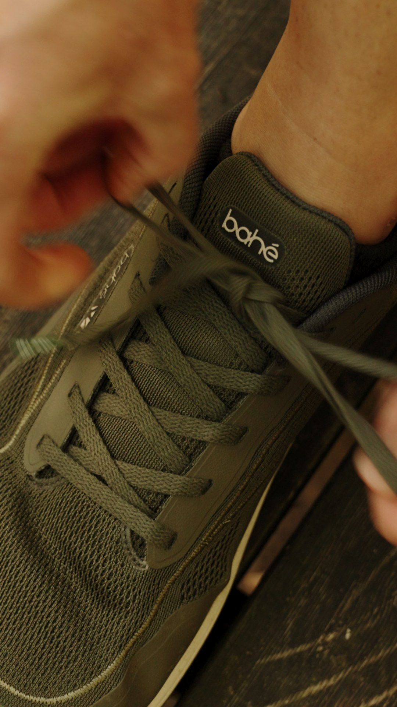
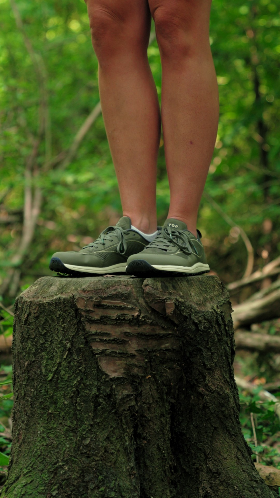
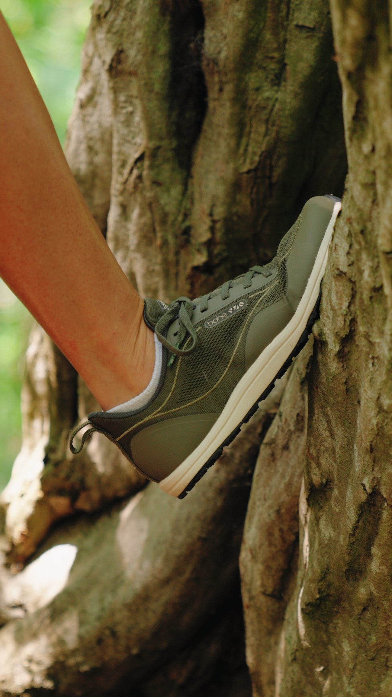

A barefoot footwear brand. A reusable asset library. A lesson that changed how I work.
Bahé didn't come looking for a brand film. I approached the founder with the idea of creating a narrative piece. His response was interesting.
"We don't really need a hero video. We need content."
— Alex, Founder of Bahé
The challenge wasn't a lack of footage. It was having enough useful assets to support the brand day to day. Like many growing ecommerce brands, Bahé had experience receiving large batches of content that were difficult to organise, difficult to reuse, and often ended up sitting unused on hard drives.
"We get all these files and they're one or two edits — big files, ungraded, no direction on what to do."
— Alex, Founder of Bahé
That became the real problem we wanted to explore.

The clips Bahé returned to weren't always the polished edits. They were the reusable product clips and supporting footage — the plug-ins.
Instead of relying on a single finished video, Bahé had a library of assets that kept supporting the brand long after delivery.
Functionality over finish.

The most useful footage isn't defined by style.
It's defined by purpose.
Originally, I believed more reel variations would create more value. Alex's feedback changed that.
The real opportunity wasn't creating more versions of the same reel. It was creating assets that could support different marketing objectives.
Different jobs. Different assets. More useful content.

Most shoots produce a final video.
Story Engine is designed to produce a reusable asset library — one that can support social media, product marketing, founder content, websites and email long after the shoot is finished.
"It's really useful to have that content as a library we can keep using."
— Alex, Founder of Bahé
Drop a message and let's talk about what a pilot shoot could look like for your brand.